1. 개폐 축 커플링 세트 (황색도금)
- 커플링 1개 (25ø용)
- 커플링 고정볼트 1개 (M8×16mm)
- 개폐 축 고정볼트 2개 (M8×16mm)
DC24V 모터로 구동되는 롤·업·다운 방식의 전동개폐기(비닐용)입니다.
DC24V 저전압을 사용하여 감전 위험으로부터 안전합니다. 당사 세계 최초 적용(1991년)
| 구분 | 항목 | 안전 사용 기준 | 최대(한계) |
|---|---|---|---|
| 전원 | 정격 전압 | DC24V | DC24V |
| 정격 전류 | 3.5A | 5A | |
| 모터 | 회전수 | 4.0rpm | 3.7rpm |
| 토크 | 6Kg·m | 9Kg·m | |
| 감속기 | 감속 방식 | 헤링본 + 유성기어 | - |
| 제품 사양 | 리미트 설정범위 | 35 | - |
| 본체 무게 | 2.8kg | - |
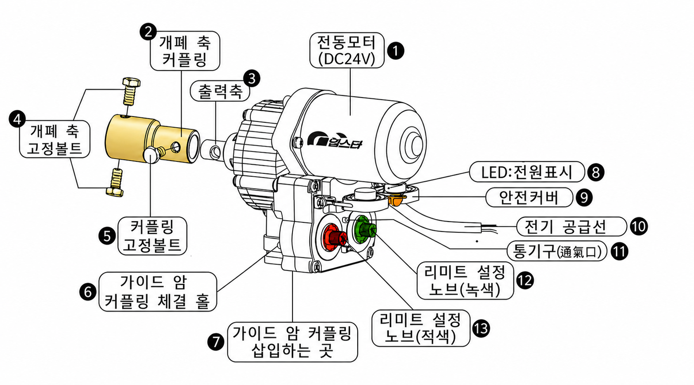
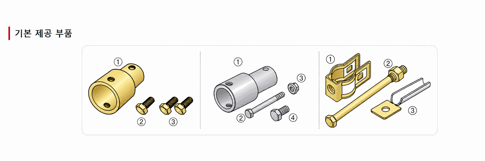
설정 전 준비사항과 좌측용·우측용 설정 순서를 확인한 후 시뮬레이터로 연습하십시오.
ⓘ 설정된 한계점에 도달하면 리미트 스위치가 작동하여 모터가 자동으로 정지합니다.
전원을 공급하기 전에 아래 네 가지를 먼저 확인하십시오.
DC24V 전원과 전기 극성에 따른 구동축 회전방향을 확인합니다.
안전커버를 열고 적색·녹색 화살표를 모두 0 눈금에 맞춥니다.
개폐축과 피복재 주변에 사람이나 장애물이 없는지 확인합니다.
설정 중 제품 곁을 떠나지 말고 이상 작동 시 전원을 차단합니다.
⚠ 적색·녹색 화살표가 모두 0이면 DC24V를 공급해도 작동하지 않습니다.
열림 위치를 먼저 설정하면 닫힘은 열린 회전수만큼 자동으로 맞춰집니다.
전기 공급 전에 적색·녹색 화살표를 모두 0으로 맞춥니다.
청색＋·갈색－ 전원이 공급되고 녹색 LED가 켜집니다.
녹색 노브를 시계방향으로 돌려 원하는 회전수에 맞춥니다.
구동축이 시계방향으로 회전하고 녹색 돌기가 롤러를 누르면 정지합니다.
LED가 적색으로 바뀌고 반시계방향 회전 후 자동 정지합니다.
좌측용과 같은 순서로 진행하며 극성·LED·회전방향·설정 다이얼은 반대입니다.
전기 공급 전에 적색·녹색 화살표를 모두 0으로 맞춥니다.
갈색＋·청색－ 전원이 공급되고 적색 LED가 켜집니다.
적색 노브를 반시계방향으로 돌려 원하는 회전수에 맞춥니다.
구동축이 반시계방향으로 회전하고 적색 돌기가 롤러를 누르면 정지합니다.
LED가 녹색으로 바뀌고 시계방향 회전 후 자동 정지합니다.
설명서의 시뮬레이터와 동일하게 설치 방향과 회전수를 선택하여 연습합니다.
열림 극성 : 청색 ＋ · 갈색 －
컨트롤러 출력단자의 극성과 설치 방향에 맞춰 개폐기 전선을 연결합니다.
아래 단자 위치는 컨트롤러를 정면에서 본 기준입니다.
열림 시 시계방향으로 회전
열림 시 반시계방향으로 회전
💡 좌측용은 청색선→왼쪽 단자, 우측용은 갈색선→왼쪽 단자로 기억하면 간단합니다.
설치 방향과 운전 상태를 선택해 결과를 확인하십시오.
본 운전 전에 짧게 시험운전하여 방향을 확인하십시오.
컨트롤러와 개폐기의 전원이 꺼진 상태에서 연결합니다.
컨트롤러의 DC 24V 개폐기 출력단자인지 확인합니다.
열림 시 좌측용은 시계, 우측용은 반시계 회전하는지 확인합니다.
전선 연결부에는 방수 성능이 확인된 방수용 제품을 사용합니다.
ⓘ 타사 컨트롤러 사용 시 출력단자 위치와 극성이 다를 수 있으므로 해당 설명서에서 열림 시 ＋·－극을 먼저 확인하십시오.
증상을 선택하고 안전하게 확인할 수 있는 항목부터 순서대로 점검하십시오.
위에서 아래 순서로 확인하십시오.
방향 문제와 리미트 문제를 구분해서 확인합니다.
ⓘ 설정 후 열림·닫힘 시험운전을 실시하고 안전커버를 정확하게 닫으십시오.
아래 증상이 보이면 즉시 운전을 중지하십시오.
사용자 확인 범위를 넘어서는 증상입니다.
제품이 물에 잠겼거나 안전커버 내부에 빗물 흔적이 있습니다.
모터, 컨트롤러 또는 전선에 과열 흔적이 있습니다.
합선이나 과부하 가능성이 있으므로 교체를 반복하지 않습니다.
설정 위치를 지나 계속 회전하거나 자동 정지하지 않습니다.
심선 노출, 합선 흔적 또는 방수 연결부 손상이 있습니다.
낙뢰 이후 제품 또는 컨트롤러가 비정상적으로 작동합니다.
제품 모델명, 증상, LED 색상과 발생 상황을 기록한 뒤 전문 점검을 요청하십시오.
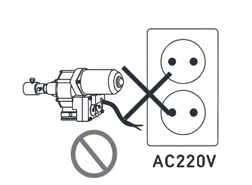
AC 전원 연결 금지본 제품은 DC24V 전용입니다. AC220V에 연결하지 마십시오.
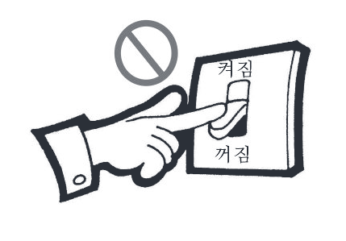
작업 전 전원 차단설치·수리 작업 전에는 감전 방지를 위해 전원을 차단하십시오.
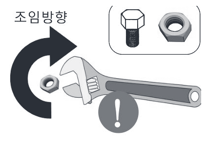
너트 단단히 조임너트가 저절로 풀리지 않도록 확실하게 조여 주십시오.
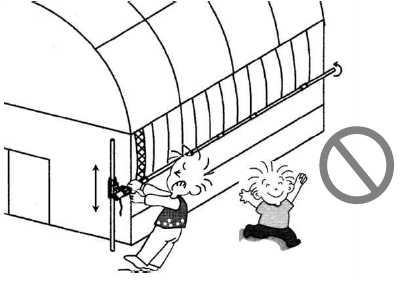
작동부 접근 금지어린이가 작동부 근처에서 놀거나 만지지 않게 하십시오.
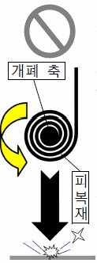
개폐축 분리 금지개폐축이 지면 위에 있을 때 전동개폐기를 분리하지 마십시오.
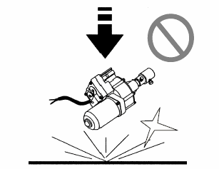
충격 금지제품을 던지거나 떨어뜨려 충격을 주지 마십시오.
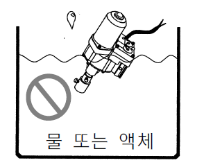
침수 금지물 또는 액체 속에 넣거나 수중에서 사용하지 마십시오.
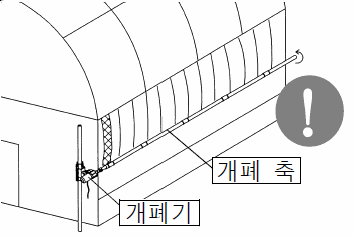
개폐축 간격 확보개폐축이 휘거나 지나치게 걸리지 않도록 설치하십시오.
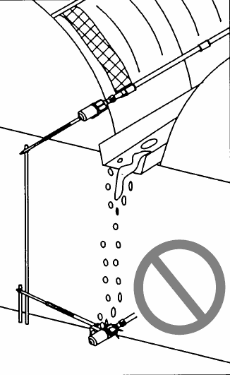
낙수 위치 피하기빗물이 모여 떨어지는 위치 아래에 설치하지 마십시오.
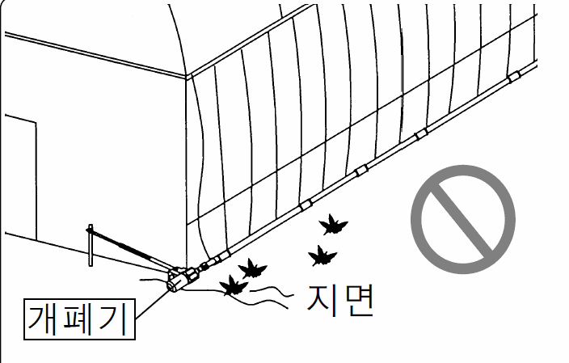
지면 접촉 금지제품이 지면에 닿거나 설치 위치가 낮지 않게 하십시오.
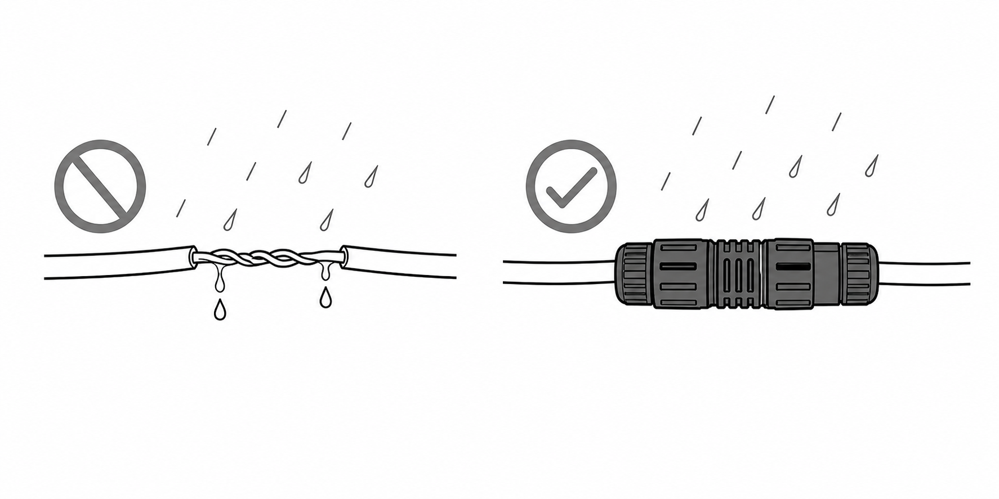
연결부 방수 처리전동개폐기와 전선 연결부는 방수 처리하십시오.
개폐 방향과 리미트 동작을 확인합니다.
볼트 체결과 배선 연결 상태를 점검합니다.
어린이가 작동범위 근처에서 놀거나 만지지 않게 하십시오.
개폐축이 지면 위에 있을 때 제품을 분리하지 마십시오.
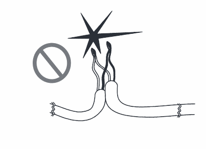
전선 손상 점검전선의 피복 상태와 연결 상태를 양호하게 유지하십시오.
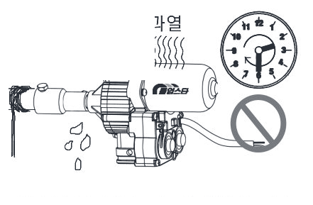
과열 운전 금지연속 작동 시간과 최대 허용 성능을 초과하지 마십시오.
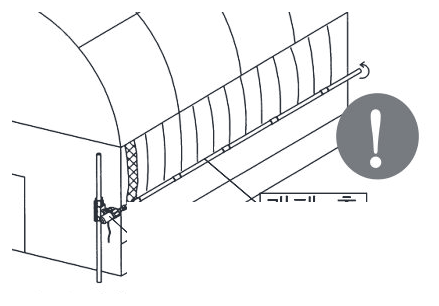
축 상태 확인개폐축을 항상 곧은 상태로 유지하십시오.
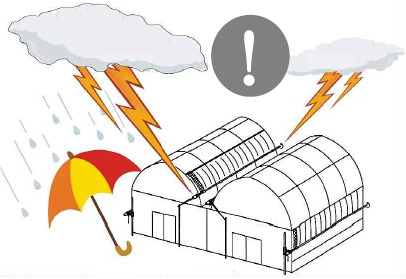
낙뢰 시 전원 차단낙뢰로 인한 손상이 우려될 때는 전원을 차단하십시오.
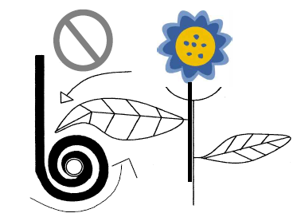
회전체 접근 금지회전하는 개폐축에 이물질이나 신체가 닿지 않게 하십시오.
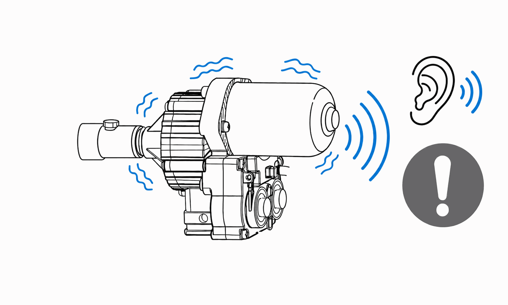
이상 소음·진동 확인이상 소음이나 진동이 발생하면 즉시 운전을 멈추고 점검하십시오.
결빙된 상태에서는 무리하게 운전하지 마십시오.
강풍 시 시설물 상태를 확인한 후 운전하십시오.
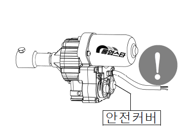
안전커버 확인설정 후 리미트 안전커버를 정확하게 닫아 주십시오.
오랜 기간 사용하지 않았다면 점검 후 운전하십시오.
겨울·장마 전 시설물과 제품 상태를 확인합니다.
장기 미사용 후 이상 여부를 확인합니다.
ⓘ 안전 주의사항을 준수하지 않으면 인명 피해 또는 재산 피해가 발생할 수 있습니다.